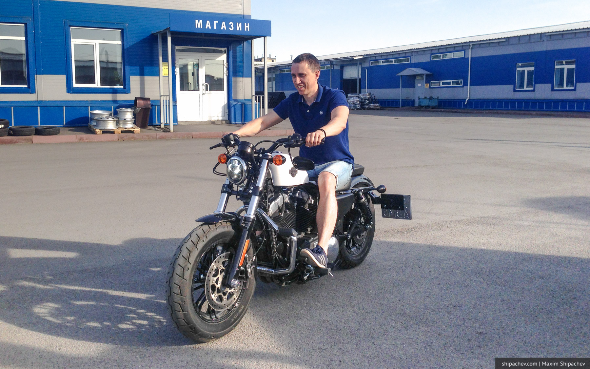
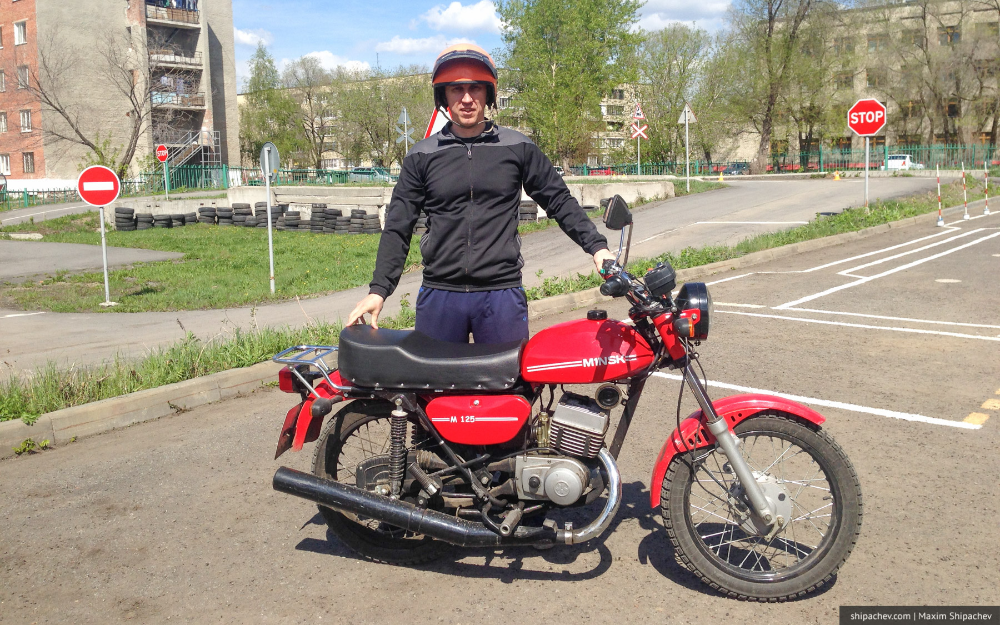
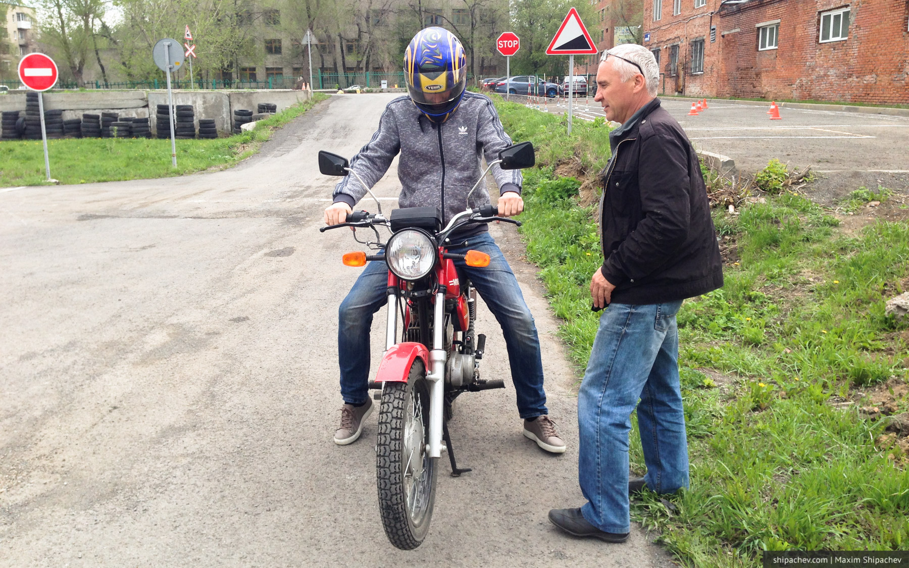
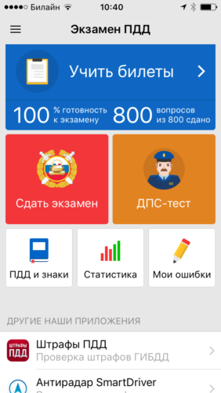
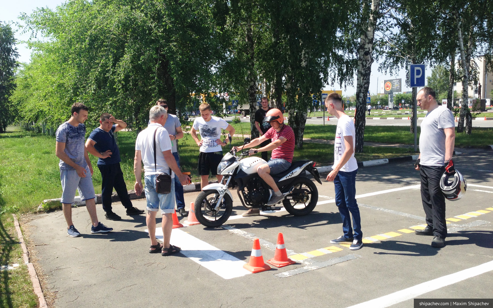

Так вышло, что я чуть ли не единственный из десятков выпускников моей школы, кто выпустился из неё без водительских прав. Все выпускники-мальчики Ижморской средней школы №1 получали профессию водителя, сдавая экзамен на категорию C, A (а потом и B). Но у преподавателя автодела был скверный характер, у меня тоже — мы разошлись во взглядах и не сошлись характерами.
Как и для любого деревенского мальчика, вождение автомобиля или мотоцикла не вызывает у меня затруднений примерно лет с 12, поэтому на категорию B я сдал сразу после покупки собственного автомобиля.
Но разве может сравниться в части романтики поездка внутри даже очень хорошего автомобиля с романтично развивающимися локонами мотоциклиста и мухами летящими прямо в лицо. Поэтому я всегда хотел открыть ещё и категорию A.

Обучение на категорию А
Так как самоподготовка перед сдачей экзамена на права теперь запрещена, сначала пришлось выбрать школу. Самая низкая стоимость обучения на категорию А в Кемерове, 7200 рублей, оказалась в Кемеровском профессионально-техническом техникуме на Химиков 2а. Данная цена актуальна, если у вас уже есть открытая категория В.
Уже несколько лет получить водительское удостоверение категории А можно только с 18 лет. Для желающих водить мотоцикл раньше есть возможность, начиная с 16 лет, получить категорию А1. Она даёт право управления мотоциклами с двигателем объёмом не более 125 куб.см.

Обучение состоит из уроков теории, которые я пропустил целиком, и уроков вождения.
До вождения допустят только после успешной сдачи «теории» в автошколе.
 Инструктор Станислав (справа)
До начала обучения я не очень понимал, как на мотоцикле сдавать «город». Выяснилось, что обучение вождению мотоцикла (как и экзамен) осуществляется только на автодроме. Что в общем-то логично, не будет же инструктор или экзаменатор сидеть сзади вас, обнимая за талию.
Научиться водить мотоцикл объективно сложнее, чем машину. Во-первых, вы должны помнить о равновесии. Во-вторых, уже в трогании с места на мотоцикле обязательно должны согласовано работать все 4 конечности: левая рука управляет сцеплением, правая — газом, левая нога переключает передачи, а правая нога готова затормозить. Это даётся не всем одинаково легко.
Теоретический экзамен в ГИБДД
Технология теоретического экзамена при сдаче на права с 1 сентября 2016 года усложнилась.
- Стандартный экзаменационный билет как и прежде состоит из 20 вопросов. Все вопросы разбиты на 4 блока по 5 вопросов: правила проезда перекрёстков, дорожные знаки и т.п.
- Как и прежде, в 20 вопросах можно допустить 2 ошибки. Но за каждую ошибку вам дадут дополнительно 5 вопросов из этого блока.
- Нельзя допускать даже две ошибки в одном блоке вопросов. Следовательно и в дополнительных вопросах нельзя допустить ни одной ошибки.
Для подготовки к теоретическом экзамену неоценимую помощь оказывает программа Экзамен ПДД. Её я рекомендую установить даже тем, кто давно имеет права. Вы будете удивлены.

До сдачи теоретического экзамена не допустят, если у вас есть неоплаченные штрафы.
Если теоретический экзамен не получится сдать с первого раза, можно будет сделать ещё одну попытку через неделю. После 3 неуспешных попыток пауза между ними увеличивается до месяца.
После успешной сдачи «теории» нужно в течение 2 месяцев обязательно сдать «практику».
Практический экзамен на категорию А
Практический экзамен на категорию А, напротив, упростился.
- Обучающемуся теперь не нужно уметь переключать передачи. Всю подготовку и экзамен можно проездить «на первой».
- Элемент «восьмёрка» раньше представлял собой натуральную «восьмёрку», в виде дорожной разметки. Заезжать на разметку было нельзя. Теперь её проезжают между фишек.
- Также водителю не нужно поднимать руку вверх, предупреждая об остановке.
На выполнение всех элементов дают 3 минуты 25 секунд. Это больше чем достаточно. Проехать медленнее чем за 2,5 минуты у меня ни разу не получалось.

Практический экзамен по вождению выглядит так:
🏍 Садимся на заведённый мотоцикл, заезжаем в импровизированный гараж, включаем нейтральную, ставим на подножку, глушим.
🏍 Выкатываем мотоцикл на парковку, ставим на подножку
🏍 Садимся на мотоцикл, заводим, включаем передачу, трогаемся с места
🏍 Проезжаем «восьмёрку». Сейчас проехать её стало проще. Раньше её рисовали и нельзя было заезжать на её границы, теперь — просто фишки.
🏍 Проезжаем «змейку»
🏍 Проезжем габаритный коридор.
🏍 Проезжаем «колейную доску», останавливаемся, ставим на землю одну! ногу, включаем нейтраль, включаем передачу, трогаемся
🏍 Подъезжаем к парковке, показываем левой рукой правый поворот
🏍 Заезжаем на «парковку», где должны остановиться не дальше 30 см. от стоп-линии и от сплошной полосы справа. Включаем нейтраль, ставим обе! ноги на землю.
🏍 Включаем передачу, уезжаем.
Практика показала, что мотоциклистов обучается не очень много. Конкретно в КПТТ набираются две группы в сезон. Первая, многочисленная, — весной. Вторая — ближе к осени. В нашей группе было 15 человек. На первую сдачу экзамена вышли 8 человек. С первого раза сдали шестеро.